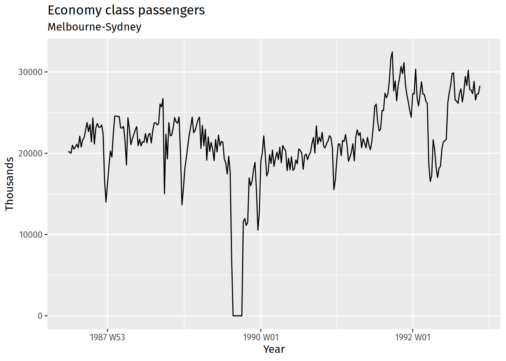

ETC3550/ETC5550 Applied forecasting
Assignment 1
Assignment 1
Stock price forecasting (Q1 and Q5)
- Hard to beat naive forecast
- Random walk model says forecast variance = h\sigma^2.
Maximum temperature at Melbourne airport (Q2)
- Weather is relatively stationary over similar time of year and recent years.
- So take mean and var of max temp in April over last 10 years.
Assignment 1
Difference in points in AFL match (Q3)
- Teams vary in strength from year to year.
- Could look at distribution of for-against points for last few years across all games for each team. Assume distributions independent.
Seasonally adjusted estimate of total employment (Q4)
- Probably locally trended.
- Perhaps use drift method based on average monthly change in last 2 years.
Some case studies
CASE STUDY 1: Paperware company
CASE STUDY 1: Paperware company
Methods currently used
- A
- 12 month average
- C
- 6 month average
- E
- straight line regression over last 12 months
- G
- straight line regression over last 6 months
- H
- average slope between last year’s and this year’s values. (Equivalent to differencing at lag 12 and taking mean.)
- I
- Same as H except over 6 months.
- K
- I couldn’t understand the explanation.
CASE STUDY 2: PBS
CASE STUDY 2: PBS
The Pharmaceutical Benefits Scheme (PBS) is the Australian government drugs subsidy scheme.
- Many drugs bought from pharmacies are subsidised to allow more equitable access to modern drugs.
- The cost to government is determined by the number and types of drugs purchased. Currently nearly 1% of GDP.
- The total cost is budgeted based on forecasts of drug usage.
CASE STUDY 2: PBS
- In 2001: $4.5 billion budget, under-forecasted by $800 million.
- Thousands of products. Seasonal demand.
- Subject to covert marketing, volatile products, uncontrollable expenditure.
- Although monthly data available for 10 years, data are aggregated to annual values, and only the first three years are used in estimating the forecasts.
- All forecasts being done with the function in MS-Excel!
CASE STUDY 3: Car fleet company
Client: One of Australia’s largest car fleet companies
Problem: how to forecast resale value of vehicles? How should this affect leasing and sales policies?
Additional information
- They can provide a large amount of data on previous vehicles and their eventual resale values.
- The resale values are currently estimated by a group of specialists. They see me as a threat and do not cooperate.
CASE STUDY 4: Airline
CASE STUDY 4: Airline
CASE STUDY 4: Airline
Problem: how to forecast passenger traffic on major routes?
Additional information
- They can provide a large amount of data on previous routes.
- Traffic is affected by school holidays, special events such as the Grand Prix, advertising campaigns, competition behaviour, etc.
- They have a highly capable team of people who are able to do most of the computing.
Exam
Exam: 5.00pm (AEST) 6 June
Five Sections, all to be attempted.
- A
- Short answers/explanations. Write about 1/4 page on four topics (out of six possible topics). Nuanced answers required.
- B
- Describing a time series, decomposition, choosing a forecasting method.
- C, D, E
- Benchmarks, ETS models, ARIMA models, Dynamic regression models, forecast evaluation.
- Interpretation of R output, but no coding.
- Closed book with ETS formula sheet
- Allowed: a calculator, 1 A4 double-sided sheet of notes, 5 working sheets
Preparing for the exam
- Exams from 2021–2023 on website.
- Solutions available from 1 June.
- Exercises. Make sure you have done them all (especially the last two topics).
- Identify your weak points and practice them.
- Write your own summary of the material.
- Practice explaining the material to a class-mate.
Help available
- See us during the consultation times (for details refer to the website).
- Discuss on the forum.
Useful resources for forecasters
- International Institute of Forecasters.
International Symposium on Forecasting
- Charlottesville, Virginia, June 25–28, 2023
- International Journal of Forecasting
- Foresight (the practitioner’s journal)
Links to all of the above at forecasters.org
IIF Best Student Award
US$100
A certificate of achievement from the IIF
One year free membership of the Institute with all attendant benefits. Subscriptions to:
- the International Journal of Forecasting
- the practitioner journal: Foresight
- The Oracle newsletter
Discounts on conference and workshop fees, and links to a worldwide community of forecasters in many disciplines.